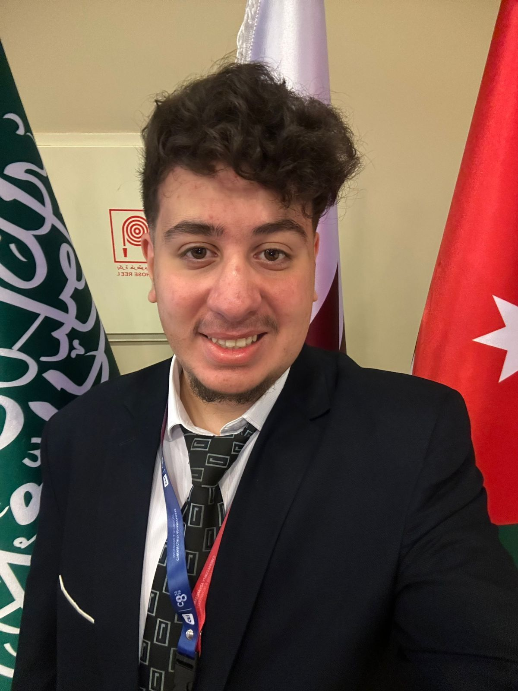

| Tools | Description | Websites |
|---|---|---|
| Wireshark | Network Analysis Tool | wireshark.org |
| Burp Suite | Web Application Security Tool | portswigger.org |
| Python | Programming Language | python.org |
| Nmap | Network Scanner | nmap.org |
In four years, I hope to establish myself as a cybersecurity professional working to protect organizations from modern cyber threats. I am particularly interested in areas such as penetration testing and cloud security, where I can analyze systems and identify vulnerabilities before attackers exploit them. During this time, I plan to continue developing my technical skills and gaining hands-on experience with advanced security tools and frameworks. I also aim to earn professional certifications that will strengthen my knowledge and credibility in the cybersecurity field. Ultimately, my goal is to contribute to building secure digital infrastructures and helping organizations maintain strong security practices.